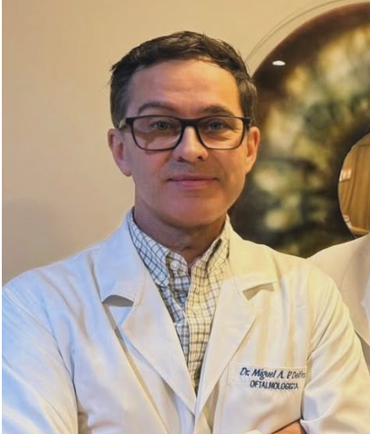
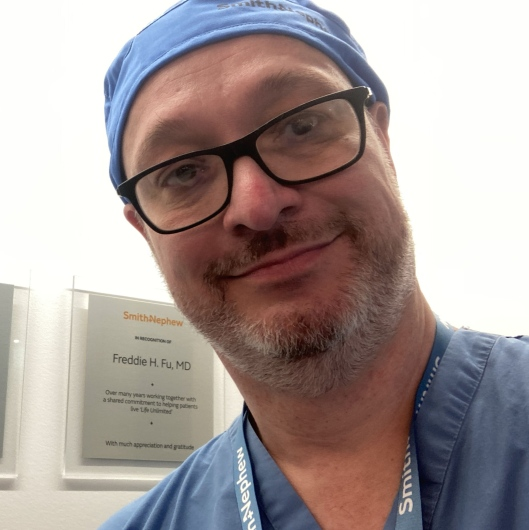

Dr. Miguel Ângelo Delfes
Oftalmologista
Meu objetivo é aprimorar a qualidade de vida através da visão, pois é por meio deste sentido que estabelecemos nosso principal contato com o mundo. Minha prática é centrada no atendimento humanizado, cuidando da saúde visual dos meus pacientes com paixão pelo que faço. Sempre priorizo a compreensão e a empatia. Meu foco está no bem-estar dos pacientes, esforçando-me para adaptar os cuidados oftalmológicos às suas necessidades e expectativas individuais, com o respaldo de conhecimento técnico aliado à uma vasta expêriencia na profissão. "Amarás o Senhor teu Deus de todo o teu coração, e de toda a tua alma, e de todo o teu pensamento. Este é o primeiro e grande mandamento. E o segundo, semelhante a este, é: Amarás o teu próximo como a ti mesmo." [Mateus 22:37–39]
Convênios: Sinam, Unimed, Medprev, Solumedi

Dr. Waldir Alves Da Cunha Junior
Ortopedista
Olá, sou o Dr. Waldir Alves da Cunha, especialista em Ortopedia e Traumatologia. Minha missão é proporcionar cuidados de saúde personalizados e eficazes, sempre priorizando o bem-estar dos meus pacientes. Com uma vasta experiência na área, ofereço um atendimento humanizado, onde cada pessoa é tratada com a atenção e o respeito que merece. Estou comprometido em ajudá-lo a recuperar sua qualidade de vida. Formação: UFPR 1992 ESPECIALISTA EM ORTOPEDIA E TRAUMATOLOGIA CIRURGIA DO OMBRO E VIDEOARTROSCOPIA ORTOPEDIA GERAL ( BURSITES , TENDINITES , RUPTURAS DE TENDÃO , INFLAMAÇÕES NAS ARTICULAÇÕES) INFILTRAÇÕES COM ANTIINFLAMATÓRIOS OU ACIDO HIALURONICO TRATAMENTO DA DOR MÚSCULO ESQUELÉTICA
Convênios: Sinam, Unimed, Medprev
Dra. Evelyn Brito Duarte Martins
Dentista
Meu objetivo é atender todas as suas necessidades, dedicada a mostrar um cuidado genuíno com os pacientes. Me empenho em atender às suas inseguranças, ajudando a transformar a autoestima em um verdadeiro autocuidado, meu principal intuito é te proporcionar total segurança e satisfação com os resultados, tenho compromisso em criar um ambiente acolhedor e avaliar cada paciente individualmente.